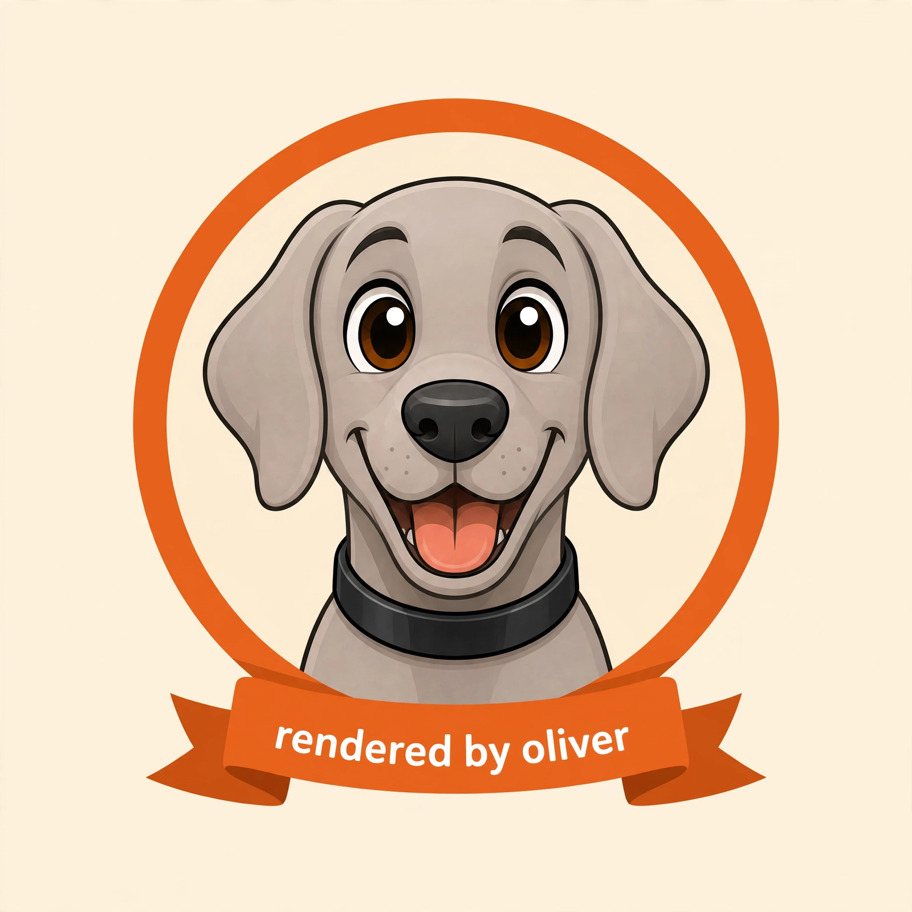

These docs were built by the tool they document. Five Knap templates plus five JSON data files, rendered by dogbed render with --title and --css into static HTML by docs/build.sh. No site generator, no JavaScript — the docs build is as dumb as the tool.
The rule on this site: every output block is real. Each one was produced by running the command shown with the dogbed binary on main, and the captured bytes were embedded into the page data with jq — nothing hand-typed, nothing invented.
The quality story, told with an artifact: the authoring agent reviewed its own PR #3 — the one that added the document shell and the starter library — with the tool it touches, and rendered the verdict through that tool. The owner review said approve and merge with the 8/8 smoke scenarios green; what follows is the tool grading its own homework. First, print the starter: dogbed template verdict > pr3.knap. The data is that self-review:
{"blockers":[],"nits":["xmlns on the xhtml root element goes one line past the issue text — good call anyway","sample data avoids -- because Textile renders it as an em-dash","--max-output now covers the final document; README wording updated to match"],"summary":"the shell stays a dumb string wrap, the library stays three starters; ship it","title":"PR #3 — document shell + starter library","verdict":"approve"}
Render: dogbed render pr3.knap -d pr3.json —
<h1>PR #3 — document shell + starter library</h1>
<p><strong>approve</strong> — the shell stays a dumb string wrap, the library stays three starters; ship it</p>
<h2>Blockers</h2>
<h2>Nits</h2>
<ol>
<li>xmlns on the xhtml root element goes one line past the issue text — good call anyway</li>
<li>sample data avoids — because Textile renders it as an em-dash</li>
<li>—max-output now covers the final document; README wording updated to match</li>
</ol>
Running the real verdict through the pipeline surfaced genuine behaviors. First: Textile typography eats -- in data — look at the nits in the output above, where -- came back as —. The value flows through the Textile intermediate; Textile owns the typography:
$ echo '{"flag":"--title"}' | dogbed render flag.knap -d -
<p>—title</p>
Second: backticks are not code spans — Textile code spans are …, Markdown habits produce literal backticks:
$ echo '{"t":"try `backticks` for code"}' | dogbed render note.knap -d -
<p>try `backticks` for code</p>
The fix — wrap flags in … spans:
$ echo '{"t":"wrap flags in @--title@ and Textile leaves them alone"}' | dogbed render note.knap -d -
<p>wrap flags in <code>--title</code> and Textile leaves them alone</p>
Third: the verdict starter has no {% if %} guard on its sections — with an empty blockers array the Blockers heading renders with nothing under it. Look at the output above: <h2>Blockers</h2>, orphaned. The newer starters guard their sections; verdict predates them. The workaround is yours: omit or accept — the starter ships as is.
Fourth, found while building this very site: the codeblock filter emits a single Textile bc. block, and a Textile block ends at the first empty line — so a value containing blank lines splits, and everything after the gap becomes ordinary paragraphs. There is no extended block form to fall back on. That is why the quickstart on the index page shows the starter template with its blank lines drawn as ··· — an honest marker, because the block cannot hold them.
$ echo '{"src":"line one\n\nline two"}' | dogbed render block.knap -d -
<pre><code>line one
</code></pre>
<p>line two</p>
That is the dogfood deal: the tool built its own reality, and the rough edges are documented, not hidden.
index · shell · templates · contract · dogfood · deploy
